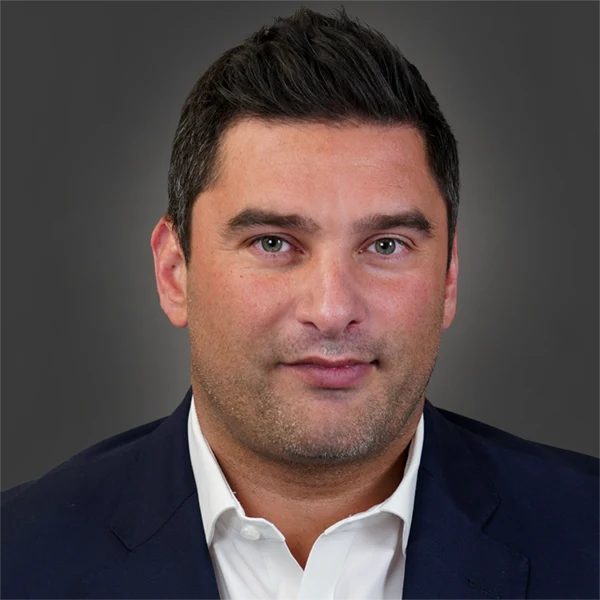

Justin Pethick leads strategy and business development at POWERS. He is the executive who works with prospective clients to understand where the engagement fits inside their operating reality, what Discovery would surface, and how the work would scale across sites or holdings. He has built more than a decade in operations management, business process improvement, and corporate strategy on the path to that role.
Before POWERS, Justin held strategy, consulting, and sales roles at private equity and large financial firms, and worked for a process improvement firm serving Fortune 500 manufacturers including Walmart, Target, and Nike. Earlier in his career, he played professional hockey and continues to play with the Texas Titans, a minor league team that directs proceeds to charities supporting veterans.
Justin holds an MBA from Cornell University and a Master of Science and Technology from Brown University, focused on corporate strategy.
POWERS engagements are led by senior practitioners. The names above are the people you will work with, on the floor, during Discovery and Implementation. If you want to meet the team before scoping a Discovery, the conversation starts with a call.
Start the conversation →